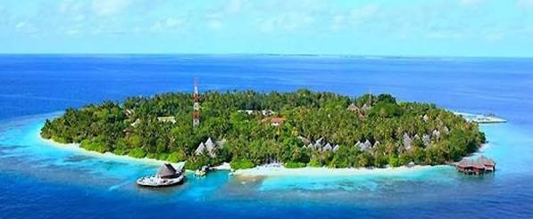

Dalam loka
Istana Dalam Loka di bangun pada tahun 1885 pada masa Sultan Muhammad Jalaluddin III(1883 - 1931),
yang menjadi Sultan ke-16 dari Dinasti Dewa Dalam Bawa.
Istana dalam loka merupakan dsaksi sejarah yang menggambarkan
betapa agunngnya semangat religius Kesultanan Sumbawa pada zaman kolonial Belanda.
Istanan dalam loka berlokasi di Pusat kota Sumbawa Besar,berjarak sekitar
2,5 km ke arah tenggara dari Bandara Sultan Kaharuddin, dapat dicapai dengan kendaraan umum.
{kind=link}
GAMBAR ISTANA DALAM LOKA
Bala Kuning
Bala kuning merupakan rumah tempat tinggal keluarga Sultan yang terakhir.
Di tempat itu dapat dijumpai benda-benda magis kerajaan.
{kind=link}
GAMBAR BALA KUNING
Dusun Pamulung
Terletak didalam Wilayah Desa Karang Dima Kecamatan Labuan Badas,sekitar 8km dari kota Sumbawa Besar.
dusun ini merupakan lokasi wisata karna di dusun ini kita dapat menyaksikan berbagai atraksi budaya tanah sumbawa.
{kind=link}
GAMBAR DUSUN PAMULUNG
Desa Tepal
Desa tradisional yang berletak di 37km dari pusat kota.Desa ini menyimpan banyak budaya tradisional,
karna masyarakat yang masih memegang teguh adat istiadat Budaya Samawa.
{kind=link}
GAMBAR MASYARAKAT DESA TEPAL
Wisma Praja
merupakan bangunan istanan yang dibangun oleh Belanda pada tahun 1932,
digunakan sebagai tempat kediaman terakhir Sultan Kaharuddin III.
{kind=link}
GAMBAR WISMA PRAJA
Desa Poto
Merupakan salah satu desa di Kabupaten Sumbawa yang tetap memelihara kelestarian budaya daerah, seperti tenunan tradisional,
pembuatan gerabah dan beberapa aksi permainan rakyat.Desa Poto sendiri terletak di Kecamatan Moyo Hilir kira-kira sekitar 13 km dari kotaumbawa besar dapat
dijangkau dengan sarana transportasi darat tersebut setiap hari.
{kind=link}
GAMBAR MASYARAKAT POTO MENENUN
Pulau Bungin
Sering disebut Pulau terpadat di dunia karna memiliki penduduk yang mencapai 14.000 jiwa/km persegi.
Terletak dalam wilayah Kecamatan Alas .Untuk mencapai pulau ini anda bisa menaiki perahu motor yang hilir mudik antara
Dermaga Alas dengan Pulau Bungin atau anda juga bisa melewati jalur darat dengan kendaraan bermotor.<
{kind=link}
GAMBAR LOKASI PULAU BUNGIN
Teluk Saleh
Merupakan gugusan berpasir putih dengan koralnya yang indah dan berbagai ragam ikan hias dengan air laut yang tenang
karna airnya yang tenang dan dunia bawah laut yang dihiasi keindahan laut yang memanjakan mata sangat cocok untuk berenang dan menyelam
menikmati keindahan pemandangan bawah lautnya.dmampirlah jika anda ke Sumbawa.
Dari Teluk Saleh juga kita bisa melihat Keindahan Gunung Tambora dari jauh.

{kind=link}
GAMBAR TELUK SALEH
Liang Petang
Gua yang mirip seperti gua bisannya, yang memiliki stalakmit dan slaktit.
Namun di gua petang ini memiliki ciri khas tersendiri yaitu di dalam gua ini terdapat patung batu yang mirip manusia,
pantar(balai-balai) dan alat tenun tradisional.
Gua petang terletak di Desa Batu Tering Kecamatan Moyo Hulu dengan jarak 29km dari Kota Sumbawa Besars sendiri.

GAMBAR KEINDAHAN LIANG PETANG
Pantai Ai Manis
Lokasi ini dapat ditemmpuh sekitar 30 menit dari Lokasi wisata ai bari Kecamatan Moyo Hilir.
Pantai Ai Manis sangan cocok untuk dijadikan tempat wisata dengan keindahan flora dan fauna-nya, beserta hutan tropis yang ada di sekitarnya ditambah lagi dengan anda bisa
mennyaksikan tenggelamnya Matahari menambah nilai plus tersendiri bagi wisatawan yang hendak berkunjung kesana.
{kind=link}
gambar PANTAI AI MANIS
Samongkat
Air jernih sungai-sungainya, jalan yang berliku-liku dengan pemandangan perbukitan dan lembah lembah sepanjang jalan dengan ketingian 450 meter diatas permukaan laut
menjadi daya tarik tersendiri bagi tempat wisata yang satuh ini.berjarak sekitar 17 km dari Kota Sumbawa Besar.
{kind=link}
GAMBAR LOKASI WIATA SAMONGKAT
Pantai Kencana
Pantai yang berjarak sekitar 11km dari Kota SUmbawa Besar merupakan pantai yang cukup menawan hati orang bannyak.
dengan bentuk pantai yang unik dengan tersedia fasilitas dan ada juga bangunan khas daerah sumbawa yang menemani.
{kind=link}
GAMBAR LOKASI PANTAIKENCANA
Pantai Saliper Ate
Pantai yang dengan alamnya menenangkan hari setiap pengunjungnya.
Terletak di sekitar 5 km ke arah barat Kota Sumbawa Besat. Anda bisa ke lokasi dengan transportasi darat dengan mudah.
{kind=link}
GAMBAR SALIPIR ATE
Pantai Batu Gong
Pantai yang satu ini memiliki pantai yang landai dengan perairan yang tenang dan bersih, cocokuntuk kegiatan bermain dan cukup indah untuk dinikmati.
Batu Gong sendiri dinamakan demikian karna disekitar lokasi tersebutterdapat batu yang menyerupai Gong yang merupakan peninggalan umat hindu Sumbawa
masa lampau.
Terletak di Desa Labuhan Sumbawa, 13 km ke arah barat Kota Sumbawa Besar.
{kind=link}
GAMBAR PANTAI BATUGONG
Pantai LaPade
Pantai lapade atau kepanjangannya Pntai LABUPADAE terletak di kecamatan Utan, Sumbawa Besar. Tempat wisata yang memiliki pemandangan indah dengan pantai yang bersih yang menyediakan hiburann yang lumayan seru.
{kind=link}
GAMBAR LOKASI PANTAILABUPADE
Pulau Moyo
Tempat wisata yang satu ini sudah luyan terkenal di kalangan wisatawan .Pulau yang keindahan alam bawah lautnya menjadi salah satu yang terbaik di dunia membuat pulau ini bannyak di kunjungi.
Hujan Tropis pulau moyo merupakan habitat kawasan rusa,sapiliar,babi hutan dan burung gosong yang dilindungi.
Pulau ini juga memiliki air terjun yang indah dan alami.
Pulau ini juga pernah dikunjungi oleh Lady Diana dari kerajaan Ingris dan Prince William dari kerajaan Belanda untuk berlibur ke tempat yang satu ini.
{kind=link}
GAMBAR AIR TERJUN PULAU MOYO